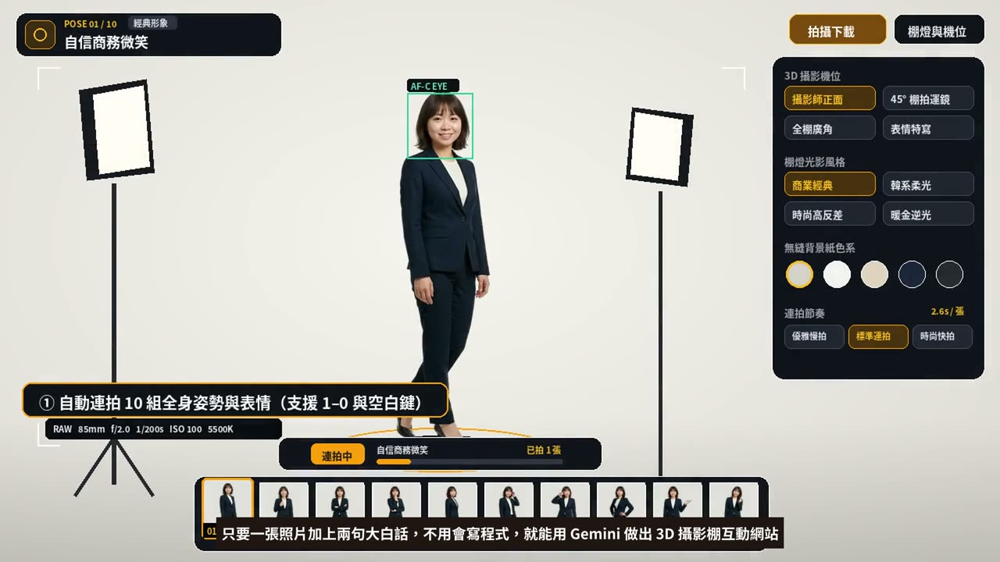
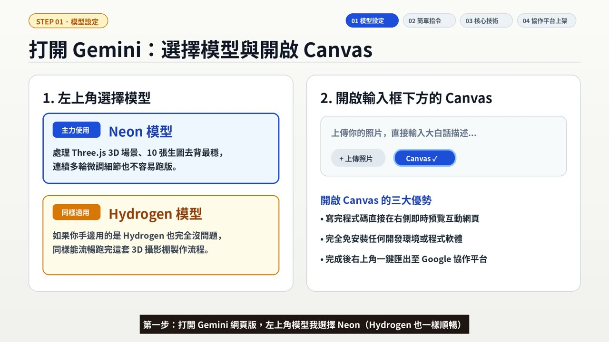
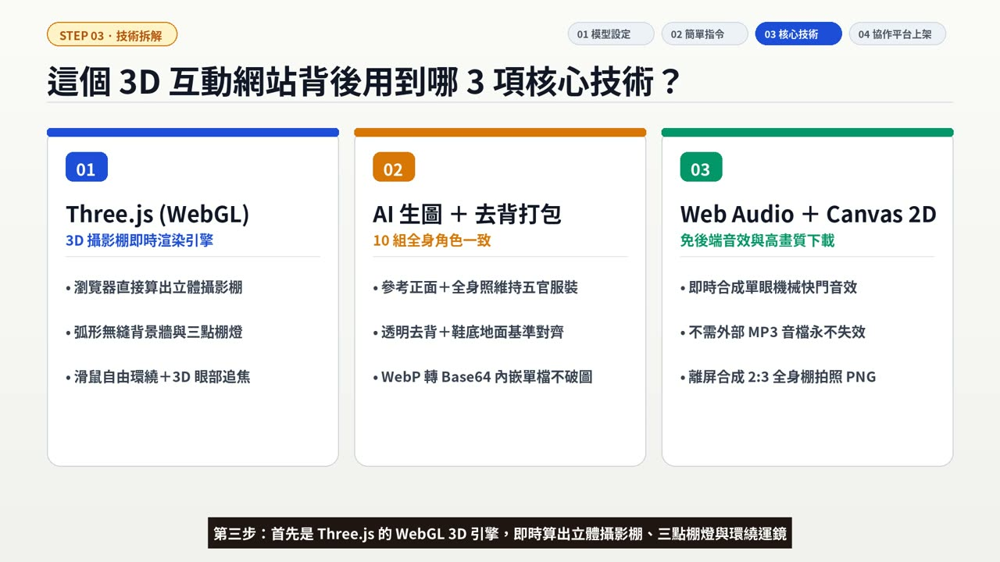
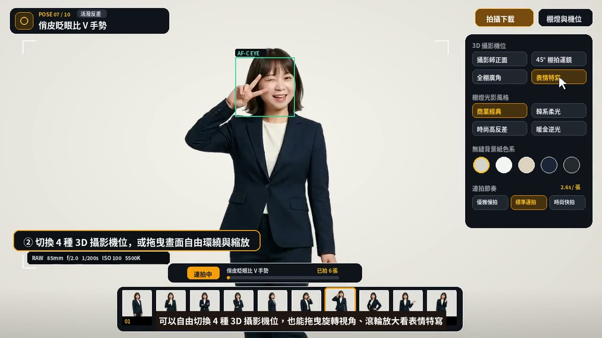

04 3D WEB手冊｜約 10 分鐘｜J3M 數學行銷人
一張照片加兩句話，用 Gemini 做出 3D 攝影棚互動網站
不會寫程式，也能讓照片裡的人站進 3D 攝影棚，連續擺出十組全身姿勢。
本教材對應 YouTube 影片「3D 攝影棚完整教學」。整個流程只用 Gemini 網頁版的 Canvas：上傳一張人物照、打一句大白話，再邊看畫面邊用對話微調，最後免費上架到 Google 協作平台分享給別人。成品就放在下方，可以先玩一次再開始做。
先玩成品：3D 攝影棚
點下方畫面會在新視窗打開成品。用滑鼠拖曳可以旋轉視角，滾輪可以拉近看表情特寫；手機請用雙指縮放。

開啟 3D 攝影棚 ↗本教材會做什麼
STEP BY STEP 操作步驟
5 個步驟，從照片到可分享的網站
事前準備
你需要：
- 一個 Google 帳號，可以使用 Gemini 網頁版與 Google 協作平台
- 一張人物正面照：五官清楚、光線均勻，背景越單純越好
- 一張人物全身照：第二輪微調時使用，頭到腳都要入鏡
- 電腦瀏覽器：Canvas 預覽與上架都建議在電腦上操作
人物照片請使用自己的照片，或已取得當事人同意的照片。成品會公開在網路上，任何人都看得到。
這套流程只需要兩句大白話。先讓 AI 做出第一版，看到哪裡不對再補一句，比一開始寫一長串規格更快，也更準。
步驟一：打開 Gemini，開啟 Canvas
- 打開 Gemini 網頁版，在左上角選擇模型。影片使用 Neon 模型；如果你手邊用的是 Hydrogen，也一樣能跑完這套流程。
- 把輸入框下方的 Canvas 打開。
- 確認 Canvas 已開啟後，就可以上傳照片開始下指令。
Gemini 寫完程式碼，會直接在右側即時預覽互動網頁；完全不用安裝任何開發軟體；完成後還能從右上角一鍵匯出到 Google 協作平台。

步驟二：第一輪，上傳照片＋一句大白話
- 在輸入框上傳一張人物正面照。
- 貼上下面這一句，送出。
用 Three.js 跟程式碼做出來，這個相片人物在攝影棚裡面拍攝形象照，像模特兒連續擺出 10 個不同表情跟動作送出後，Gemini 會先規劃再動手：建立素材目錄、產生 10 張去背姿勢圖並檢查邊緣品質，接著建構 3D 攝影棚場景與棚燈系統，最後設定人物模型與姿勢切換動畫。等它跑完，右側就會出現可以操作的攝影棚。
「用 Three.js」告訴 AI 要做 3D；「在攝影棚裡面拍攝形象照」決定場景；「連續擺出 10 個不同表情跟動作」決定互動內容。其他細節先交給 AI 決定。
步驟三：第二輪，邊看畫面邊微調
第一版出來後，先在右側預覽裡拖曳、縮放看看。影片中拉遠一看，發現人物只有半身，於是直接補上傳一張全身照，只說一句：
做得很好，可惜拉遠只有半身，全身也加入Gemini 馬上把 10 組姿勢升級成頭到腳完整的全身站姿，雙腳也會踩在攝影棚地板上，拉遠看全景與近拍特寫都很自然。
不要一次把規格寫死。先讓它做出一版，看到哪裡想改（半身改全身、換背景色、調燈光），就截圖或補一句話，最快也最準。
想再調整時，可以照同樣的方式補一句，例如：
- 「背景紙多加一個淺灰藍色」
- 「快門聲小一點，閃光柔和一點」
- 「下方姿勢縮圖在手機上改成可以左右滑動」
步驟四：看懂背後的三個技術
不需要會寫，但知道它由哪三塊組成，下次就知道該怎麼開口請 AI 修改。
| 技術 | 負責什麼 | 想改時可以這樣說 |
|---|---|---|
| ❶ Three.js（WebGL 3D 引擎） | 在瀏覽器裡即時算出立體攝影棚：弧形無縫背景牆、三點棚燈光影、滑鼠自由環繞運鏡與眼部追焦 | 「再加一盞從背後打的輪廓光」 |
| ❷ AI 生圖＋去背打包 | 參考正面照與全身照維持同一張臉與服裝，產生 10 組姿勢；透明去背、以鞋底對齊地面；壓縮後直接內嵌進同一個 HTML 檔，不會破圖 | 「第 7 組姿勢換成比讚，表情更自然」 |
| ❸ Web Audio＋Canvas 2D | 即時合成單眼快門音效，不需要外部音檔；拍攝時在背景合成一張 2:3 的高畫質全身照，一鍵下載 | 「下載的照片右下角加上我的名字浮水印」 |


步驟五：上架 Google 協作平台，公開分享
方法 A：從 Canvas 一鍵匯出（最快）
- 在 Canvas 右上角點「匯出」，選擇「Google 協作平台」。
- 系統會建立一個私人網站草稿，裡面已經放好你的 3D 攝影棚。
方法 B：複製程式碼，自己內嵌
- 在 Canvas 右上角切到「Code」，全選並複製整份 HTML 程式碼。
- 打開 Google 協作平台，建立一個空白網站。
- 點右側的「插入」→「內嵌」→「內嵌程式碼」，貼上程式碼。
- 把內嵌區塊拖曳拉滿整頁的寬與高。
發布並公開
- 按右上角的「發布」，取一個專屬網址（例如 j3m3d），再按「發布」。
- 最後一定要點頂部的「共用」，把已發布網站的權限改成「公開（任何人都可以檢視）」，就能直接丟連結分享。
發布後預設可能只有自己看得到。分享前用無痕視窗打開網址測試一次，確認別人也看得到。
10 張姿勢圖都包在同一個檔案裡，直接貼進 Google 協作平台可能會卡。可以把檔案改名成 index.html，免費放到 GitHub Pages，再回 Google 協作平台改用「插入」→「內嵌」→「透過網址」貼上連結，電腦和手機看都會很順。之後要更新，只要覆蓋 index.html 就會同步。
常見問題
人物只有半身，或腳被切掉
姿勢之間的臉或衣服不一樣
右側沒有出現預覽畫面
別人打開網址看不到
放進 Google 協作平台後很卡
沒有符合的問題，換個關鍵字試試。